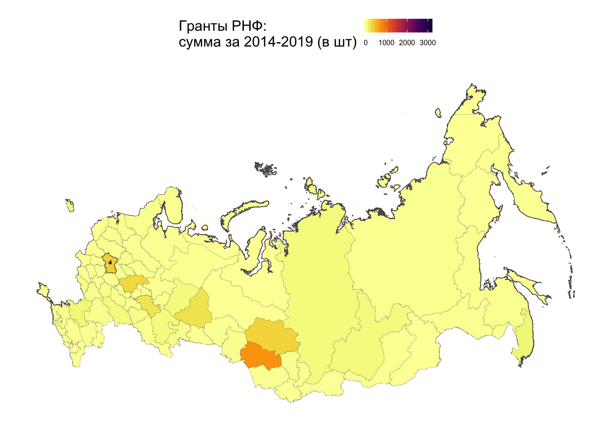
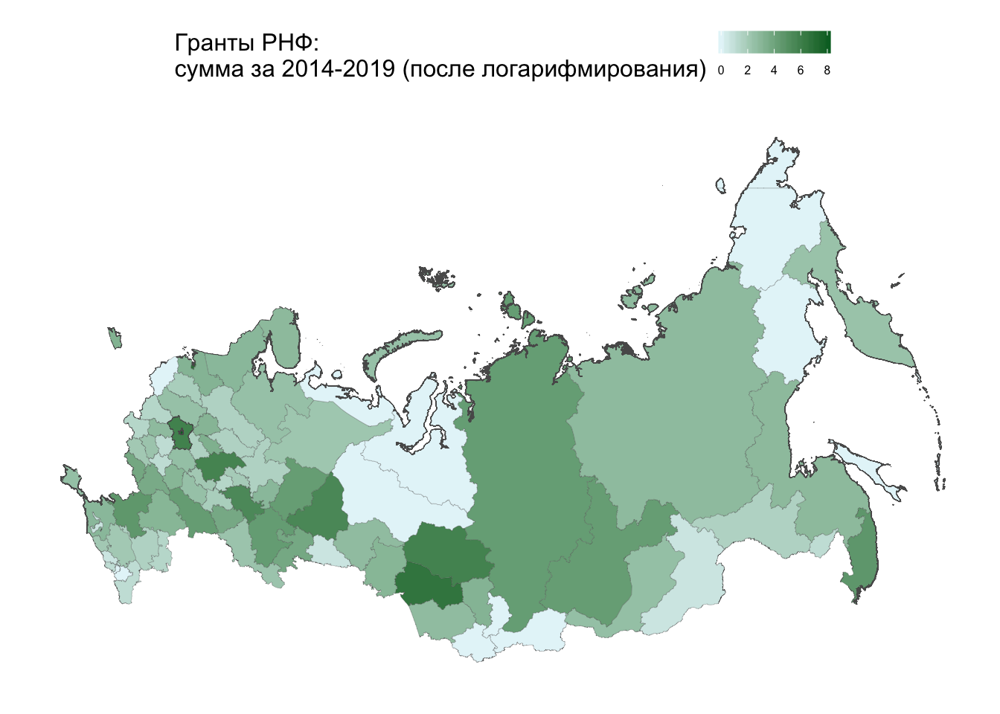
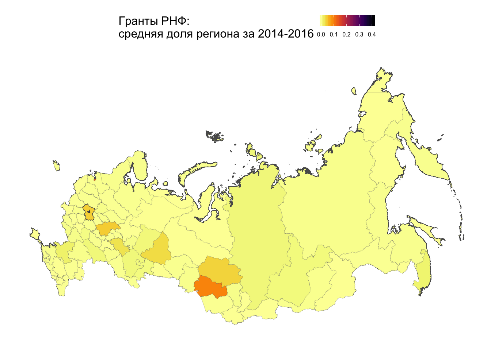

4 Карты
ЗАЧЕМ ВСЁ ЭТО? ⬇️
Идея – идти от двух гипотез:
гранты к грантам – в периоде t-1 (2014-2016) в регионе были гранты –> в периоде t (2017-2019) в регионе также будут гранты. Результат: более менее прослеживается и на картах, но на самом деле ничего выдающегося, поэтому в мусор (визуализацию картой)
гранты к гранитам в пространстве – если регион A граничит с регионом B, при этом в регионе A есть гранты, то у соседа тоже будут. Результат: гипротеза картой опровергается, а значит те пространственные эконометрические модели, которые я думала сюда прикрутить тоже в мусор
Если просто нанести все гранты на карту, то ничего инетеренсого не видно, так как распределение с ужасно длинным хвостом из-за Москвы, Петербурга и Новосибирской области.

Такое “неудачное” распределение обычно у “населения в человеках” и “доходах в деньгах”. Лечат это чаще всего логарифмированием. Шкала теперь не имеет сходу понятной интерпретации, но зато градиент становится ровнее, так как “хвост прижат”.

Далее я смотрела доли регионов (число грантов в регионе/общее число грантов по всем регионам) по двум периодам - 2014-2016 и 2017-2019, в надежде, что вдруг есть какие-то красивые тенденции во времени. Доли также сильно перетягивают на себя Москва, Петербург и Новосибирская область и хорошего градиента на получается. Кроме того, мы фактически не видим разницу в картах по двум периодам.


Я попробовала поколдовать с предыдущими картами – вынести из градиента топ-3 регионов + регионы без грантов залить белым.


На последних двух графиказ ТОП-3 остались белыми и визуально слились с нулевыми регионами.